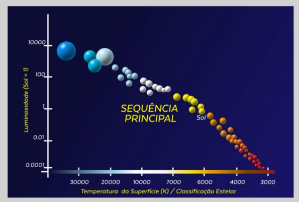
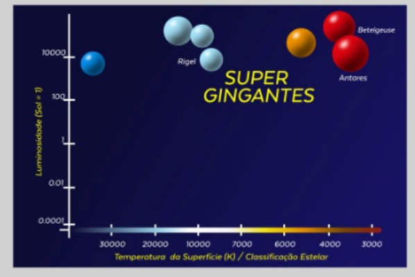
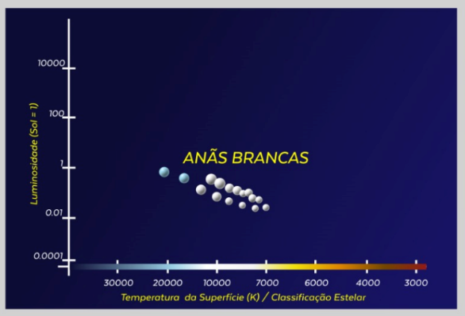

REGIÕES DO DIAGRAMA HR
O Diagrama HR também exibe regiões distintas que correspondem a diferentes fases da evolução estelar. A faixa diagonal que vai da parte superior esquerda para a inferior direita do diagrama é conhecida como a sequência principal, onde a maioria das estrelas se encontra. Estrelas na sequência principal estão em equilíbrio hidrostático, fundindo hidrogênio em hélio em seus núcleos. Esta região é crucial para entender o ciclo de vida das estrelas, pois a posição de uma estrela na sequência principal depende de sua massa e determina sua evolução futura (Russell, 2019).

Além da sequência principal, o Diagrama HR inclui outras regiões que correspondem a diferentes estágios evolutivos das estrlas.

No canto superior direito do diagrama, encontram-se as gigantes vermelhas e as supergigantes, que são estrelas em estágios avançados de evolução, tendo esgotado o hidrogênio em seus núcleos e iniciado a fusão de elementos mais pesados.

No canto inferior esquerdo, estão as anãs brancas, que são os restos densos de estrelas que esgotaram seu combustível nuclear e estão em processo de esfriamento (Hertzsprung, 2020).
A composição do Diagrama HR não é apenas limitada às estrelas individuais, mas também pode ser aplicada para estudar populações estelares inteiras, como aglomerados estelares. Em aglomerados, todas as estrelas têm aproximadamente a mesma idade e composição química, mas diferem em massa. Ao plotar todas as estrelas de um aglomerado no Diagrama HR, os astrônomos podem observar como as diferentes massas afetam a evolução estelar e determinar a idade do aglomerado com base na posição das estrelas na sequência principal e nas regiões de gigantes e anãs brancas (Russell, 2019).
Outro aspecto importante do Diagrama HR é a inclusão de estrelas variáveis e outros objetos exóticos, como estrelas de nêutrons e buracos negros. Embora esses objetos muitas vezes não apareçam diretamente no diagrama devido à sua baixa luminosidade ou temperatura, sua presença pode ser inferida pela análise de desvios das estrelas em relação às regiões esperadas do diagrama. Isso torna o Diagrama HR uma ferramenta poderosa para a detecção e estudo de fenômenos astrofísicos extremos, como pulsares e quasares (Hertzsprung, 2020).
A precisão e a riqueza de informações fornecidas pelo Diagrama HR são aprimoradas por observações detalhadas e medições precisas. Tecnologias modernas, como telescópios espaciais e espectrógrafos de alta resolução, permitem a coleta de dados sobre a luminosidade e a temperatura de estrelas em galáxias distantes, expandindo o uso do Diagrama HR para além da Via Láctea. Esses avanços tornaram o diagrama uma ferramenta indispensável para a astrofísica moderna, permitindo estudos detalhados sobre a formação estelar, a evolução das galáxias e a estrutura do universo em grande escala (Russell, 2019).